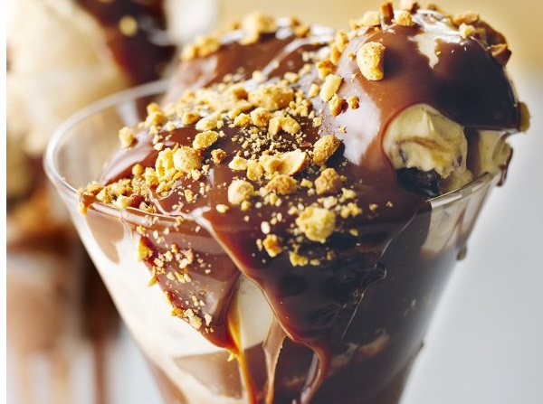

CHOCOLATE PEANUT BUTTER FUDGE SUNDAE
INGREDIENTS :
- ¾ cup heavy cream
- 4 ounces milk chocolate (chopped)
- ½ cup creamy peanut butter (Skippy for preference)
- 3 tablespoons golden syrup or light corn syrup
- 4 scoops toffee ice cream (or caramel ice cream)
- 4 scoops chocolate ice cream
- 4 scoops vanilla ice cream
- ¼ cup salted peanuts (roughly chopped or left whole to taste)
METHOD :
- Put all the cream, chopped chocolate, peanut butter and golden syrup or light corn syrup into a saucepan and place on the heat to melt, stirring occasionally. In about 2 minutes you should have your sauce ready.
- Get out four sundae glasses and put a scoop of toffee or caramel ice cream in each, followed by one of chocolate and then another of vanilla.
- Pour some chocolate peanut butter fudge sauce over each sundae and sprinkle with the salted peanuts. Hand them round and wait for people to weep with gratitude.